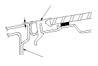
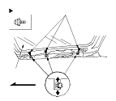

Sunroof Glass Height Adjustment
The roof panel (A) should be even with the glass weatherstrip (B), to within 0+1/−1 mm (0+0.04/−0.04 in.) all the way around. If not, make the following adjustment:

Remove the bracket cover.
Loosen the bolts on each side, and adjust the glass (A).
If necessary, repeat on the opposite side.
